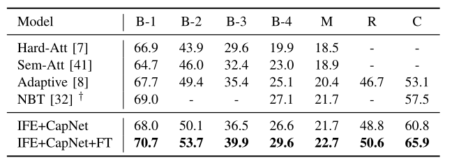
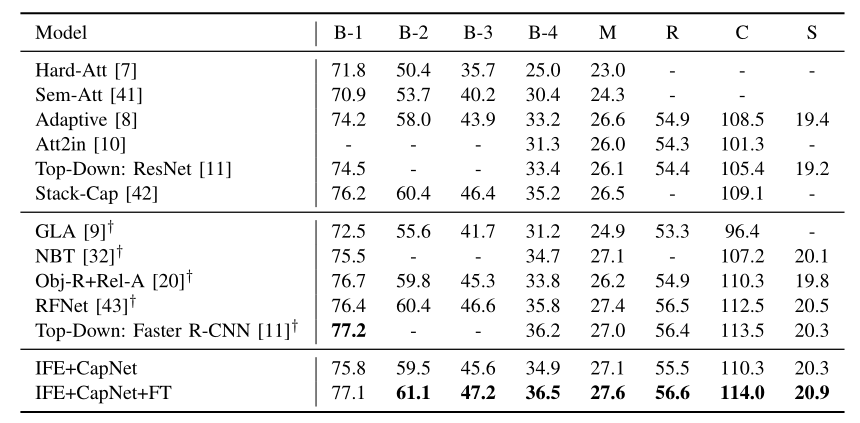
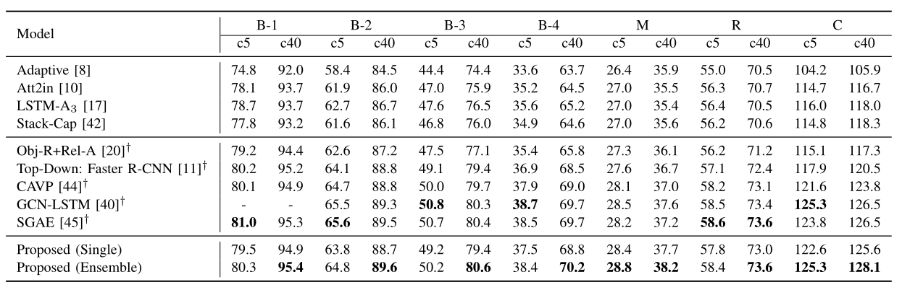

CaptionNet: A Tailor-made Recurrent Neural Network for Generating Image Descriptions
Longyu Yang, Hanli Wang, Pengjie Tang and Qinyu Li
Overview:
Image captioning is a challenging task of visual understanding and has drawn more attention of researchers. In general, two inputs are required at each time step by the Long Short-Term Memory (LSTM) network used in popular attention-based image captioning frameworks, including image features and previous generated words. However, errors will be accumulated if the previous words are not accurate and the related semantic is not efficient enough. Facing these challenges, a novel model named CaptionNet is proposed in this work as an improved LSTM specially designed for image captioning. Concretely, only attended image features are allowed to be fed into the memory of CaptionNet through input gates. In this way, the dependency on the previous predicted words can be reduced, forcing model to focus on more visual clues of images at the current time step. Moreover, a memory initialization method called image feature encoding is designed to capture richer semantics of the target image. The evaluation on the benchmark MSCOCO and Flickr30K datasets demonstrates the effectiveness of the proposed CaptionNet model, and extensive ablation studies are performed to verify each of the proposed methods.
Method:
First, a memory initialization method called IFE, shown in the bottom of Figure 1, is designed to generate global image features by feeding transformed spatial image features into LSTM and initializing the memory cell of the proposed CaptionNet. In this way, the model is able to capture richer visual semantics and the encoded image feature is more adaptable for descriptive sentence generation. Second, an improved LSTM named CaptionNet is proposed for image captioning, where two inputs including attended image feature and language feature can be fed into the model. And only the attended feature can be fed into the memory of the CaptionNet through input gates. By this means, the dependency on the previous predicted words is reduced and the generation of the current word is more dependent on visual information. The right top of Figure 1 shows the CaptionNet-based word generation model with soft attention mechanism. For the detailed structure of our CaptionNet, please refer to the original paper.

Fig 1. An overview of the proposed CaptionNet-based image captioning framework.
Result:
We compare our method with state-of-the-art approaches on the MSCOCO and Flickr30k datasets using automatic evaluation metrics such as BLEU. For simplicity, B-n is used to denote the n-gram BLEU score and M, R, C and S are employed to represent METEOR, ROUGE_L, CIDEr and SPICE scores respectively. Table 1 reports the comparison of our method with state-of-the-art approaches on the Flickr30k dataset, where ‘FT’ means fine-tuning CNN. The results in Table 1 indicate that our method significantly promotes the baseline of captioning models on the Flickr30K dataset.

Table 1. Comparison with state-of-the-art methods on Flickr30K using cross-entropy loss.
Table 2 presents the comparison of the proposed CaptionNet with other state-of-the-art methods using the cross-entropy loss on the MSCOCO dataset, where it can be seen that the proposed CaptionNet achieves almost the best on all the evaluation metrics except B-1.

Table 2. Comparison with state-of-the-art methods on MSCOCO using cross-entropy loss.
Table 3 shows the comparative results after CIDEr optimization (SCST), demonstrating that the proposed method outperforms a number of competing models with CIDEr optimization, even though some of the compared methods employ Faster R-CNN which extracts better image features than ResNet utilized by this work. Moreover, the results on the MSCOCO official test server achieved by the proposed model are reported in Table 4, where it can be seen that our proposed ensemble model achieves the highest scores of all evaluation metrics on the c40 (40 reference sentences each image) testing set and the highest METEOR and CIDEr scores on the c5 (5 reference sentences each image) testing set.

Table 3. Comparison with state-of-the-art methods on MSCOCO after CIDEr Optimization.

Table 4. Comparison with state-of-the-art approaches on MSCOCO official test server.
Source Code:
Original illustration: image placeholderCaptionNet1.0.zip
Citation:
Please cite the following paper if you find this work useful:
Longyu Yang, Hanli Wang, Pengjie Tang, and Qinyu Li, CaptionNet: A Tailor-made Recurrent Neural Network for Generating Image Descriptions, IEEE Transactions on Multimedia, vol. 23, pp. 835-845, 2021.